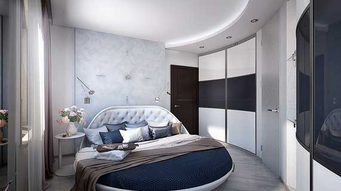

Фотореалистичные 3D визуализации помещений

3D-візуалізації є зображення майбутніх приміщень, які дозволяють задовго до закінчення ремонту наочно побачити передбачуваний результат. Подібні картинки виконуються для всіх основних приміщень квартири або будинку, обов'язково в декількох ракурсах. Нерідко 3D-візуалізації демонструють конкретну кімнату в різних умовах - наприклад, днем при природному освітленні, ввечері при основному джерелі світла або з приглушеною підсвічуванням.
При створенні візуалізацій враховуються всі раніше обговорені із замовником умови і параметри: колірне і світлове рішення інтер'єру, розташування меблів і декоративних елементів, установка побутової техніки та кухонного обладнання, матеріали обробки, способи укладання підлогових покриттів і плитки, і так далі. Завдяки подібним картинкам майбутній інтер'єр постає перед господарями на власні очі, що полегшує прийняття рішень щодо тих чи інших деталей і вибору конкретних матеріалів.
Відповідно до побажань замовника і останніми змінами, що вносяться виконується фінальна доопрацювання і коригування картинок, після чого 3D-візуалізації отримують остаточне затвердження. З цього моменту вони перетворюються в приклад, який залишається лише слідувати для отримання бажаного результату.